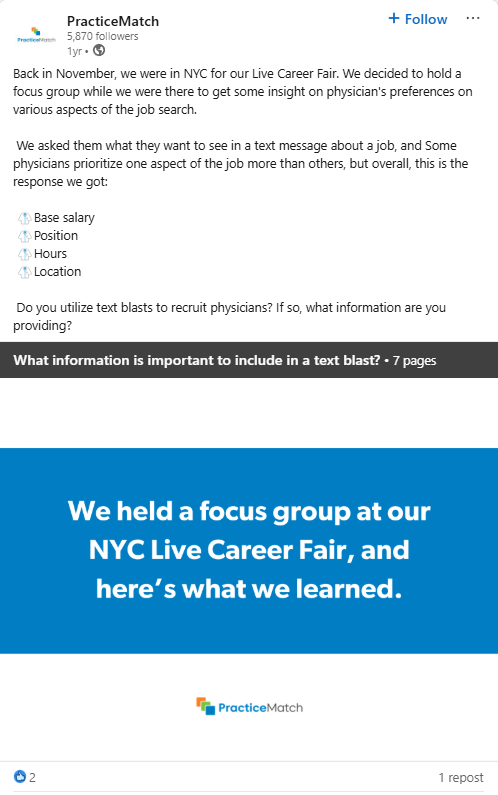
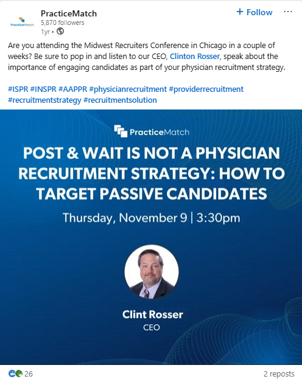
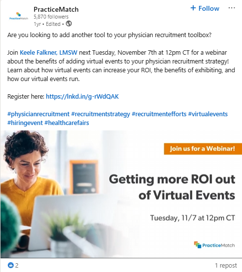
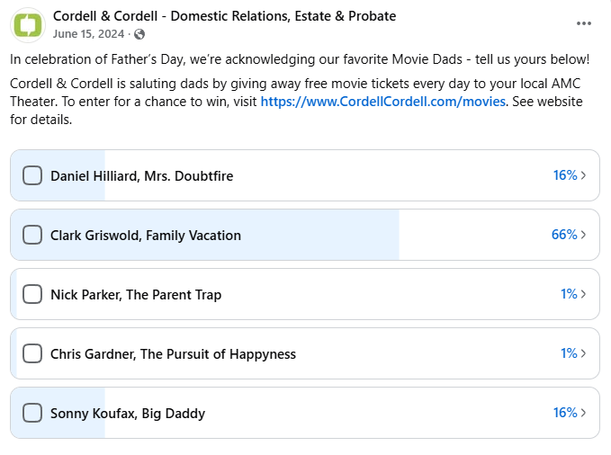
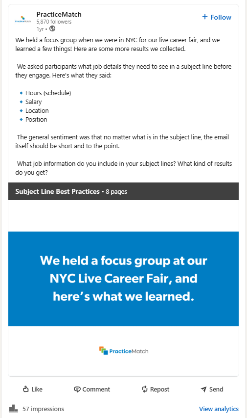
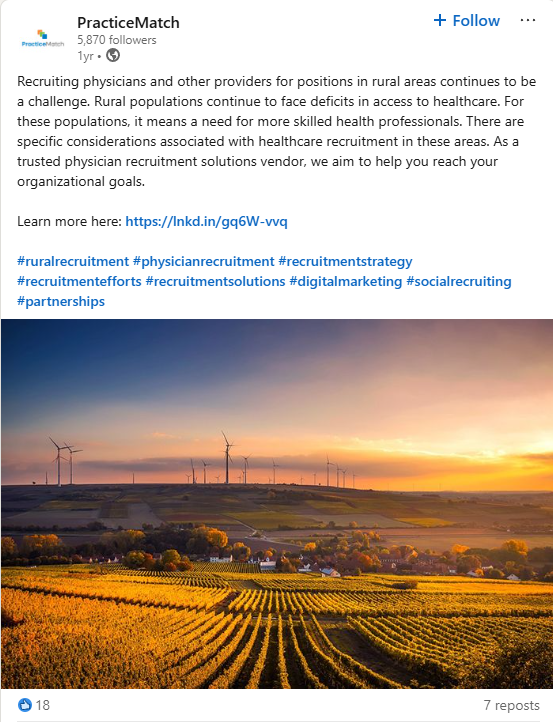

A closer look at the content I've made, from social posts for LinkedIn and Facebook to articles published for healthcare audiences.
Event promotion, original research, and brand content for LinkedIn and Facebook. Click any post to see it full size.






Posts I've created.
Event promotion, original research, and brand content for LinkedIn and Facebook. Click any post to see it full size.